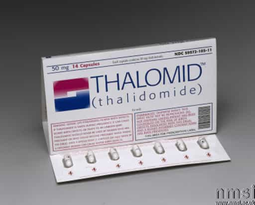

< < < Back
Pregnancy Is No Excuse To Be Fat And Gross – Return Of Kings
There’s an epidemic of land whales in first world countries bitching about post pregnancy bellies, blaming even their own children for being fat. I’m going to go over the math and the facts of pregnancy weight gain. Next time you see a woman with pudge, blaming her children for it, you can use logic to counter her excuses.
“You can eat for two!”
Whoever started this myth has affected more women worldwide than any form of the “patriarchy.” According to leading doctors, women should be eating an extra 300-500 calories a day to accommodate the baby during pregnancy. This amounts to maybe a pound week at most of weight again. The Institute of Medicine recommends a weight gain of 25-35lbs during the whole pregnancy. That means a chick who is 120lb before pregnancy will be at most 155lb before the baby comes out. So when you hear a lady gain upwards of 50 lbs, she’s not just harming herself but the child as well. Obesity increases the risk of infection, c-section probability, thrombosis, gestational diabetes for the mother, and can even impact the child. It’s not just a female aesthetic issue but one of child endangerment.
Women who gain too much during their pregnancies are similar to women who smoke during theirs. At least society is willing to socially shame the smokers—we need to start fat shaming pregnant women who gain too much for the protection of their fetus. It’s the right thing to do.
Once the baby comes out
This is when the bogus math comes in for new mothers. Yes, you won’t have a flat stomach in a week, but it can happen realistically in a year with a good plan. Let’s presume we are using the example of the chick who is 155 in the delivery room. According to data from Webmd, only a third of the weight will stay post-pregnancy as body fat. So when that woman leaves the hospital, she’s at least 15-20 lbs lighter. That takes her down to 135-140 lbs. If the new mother breastfeeds, performs mild exercise, and eats carefully, even a 155 lb whale can slim back down to 120 within a year.
Shame fat mothers
After a year of pregnancy, a woman has absolutely no excuse to be overweight. They’re just fat chicks who happen to be mothers. Every time you see a woman who’s been pregnant a year ago or more and she’s still big, call her out with subtle remarks. A good subtle shaming comment is to ask the fat mother her due date. It will be awkward for you to do so, but we have an obligation as a society to help fat mothers be more aesthetically pleasing. It’s not just for our dicks but for the betterment of all women.

Gaining too much weight during a pregnancy can harm children and their mothers. Ladies, please put down that cheeseburger like it’s thalidomide. Even if the side effects aren’t as highly publicized as thalidomide, being fat and pregnant is child endangerment, and being a fat mother is just plain gross.
Read Next: Why Fat Women Should Be Sent To Prison


{kind=link}